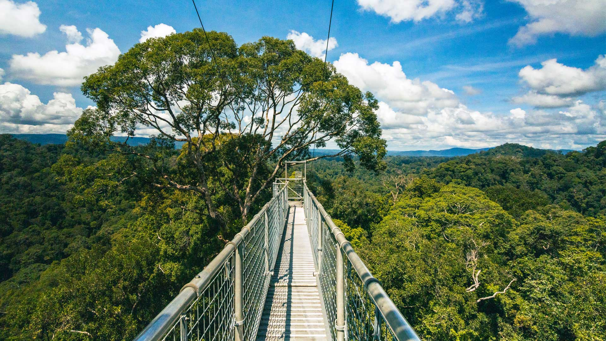
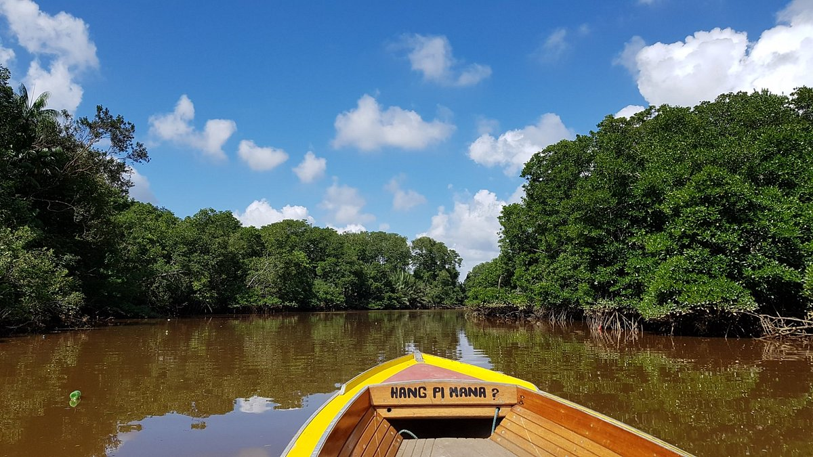

Ulu Temburong National Park
Explore one of Brunei's most remarkable rainforest destinations, known for its rich biodiversity and beautiful forest surroundings.
DISCOVER THE NATURAL BEAUTY
Discover the wild side of Brunei.
Brunei is home to lush tropical rainforests, winding rivers and diverse wildlife. Discover the peaceful natural landscapes that make this country special.

Explore one of Brunei's most remarkable rainforest destinations, known for its rich biodiversity and beautiful forest surroundings.

Discover Brunei's waterways and natural habitats, where visitors can experience the country's diverse wildlife and tropical environment.